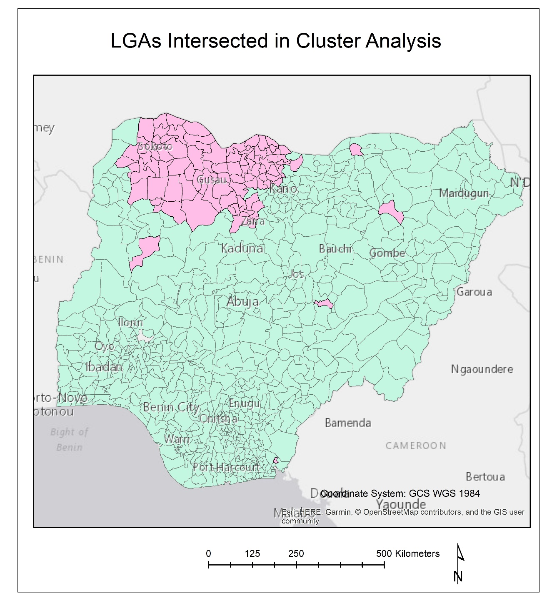

Cerebrospinal Meningitis (CSM) is a bacterial respiratory disease that infects the lining of the brain and spinal cord, often causing severe inflammation and damage. It is transferred from person to person via small respiratory droplets expelled from an infected individual (i.e. a cough or a sneeze) (WHO, 2019). Studies show that CSM is now among the top ten causes of death worldwide in terms of infectious disease (see, for example, Grimwood et al., 2000). Areas with the highest propensity towards epidemic levels of the disease have come to be known as part of the African ‘Meningitis Belt’, an area that stretches across the entire continent, from Senegal to Ethiopia, and sometimes as far north as Egypt and as far south as Zambia (Cheesbrough et al., 1995).
A fairly large body of research exists linking CSM infection and the lived environment. The ‘lived environment’ may include social factors, features of the natural surroundings, and/or patterns in the local weather and climate. Scholars have noted that infection rates usually increase during the region’s dry season, especially during the period from November until March known as the ‘Harmattan’, characterised by a dry, hot, and dusty wind from the northeast Sahara (Monnier, 1980). One explanation for such correlation could be the fact that dry, hot Harmattan winds cause significant irritation in the throat and lungs, including small abrasions, increasing susceptibility to the respiratory disease (Peréz Garcia-Pando et al., 2014; Monnier 1980).
Nigeria is an important area to study because of its high population (190 million, the highest in Africa) and high population growth rate (World Bank, 2019). In addition, because of its unique geographic location, Nigeria contains seven eco-climactic zones (Omonijo et al., 2011). The variation of urban and rural areas and climactic zones in Nigeria makes it a particularly interesting and relevant for geographic analysis. The results of this study could influence further research and inquiry in the areas of GIS, remote sensing, public health practice and policy, epidemiology, and meteorology.
The research project attempted to (1) identify statistically significant (p<0.01) clusters of high monthly CSM infection rates in Nigeria from 2017-2018 and (2) use ordinary least square (OLS) linear regression models to examine possible correlation between environmental factors and infection rates in Nigeria during this time period. Disease clustering was analysed using the software SaTScan (satscan.org) while linear regression modelling and analysis was performed in ArcMap using the spatial statistics toolbox. The following were the research questions central to the project:
Analysis was done by local government area or LGA, with a total of 774 in Nigeria. Choice of ‘explanatory variables’ were narrowed down by their frequency of occurrence in literature and the significant role they played in any previous research. The following table is a summary:
Most environmental data was obtained in raster format and analysed on a month to month basis. Raster data was summarised by LGA using zonal statistics. The following flow diagram explains the primary steps required:
The SaTScan cluster detection programme initially detected 13 clusters of high infection rates for the years 2017 and 2018. Of these 13 clusters, only 10 were statistically significant (9 x p<0.00001, 1 x p≤0.016). Only four clusters actually encompassed the centroids of multiple LGAs, suggesting that the other ‘clusters’ are actually just significant LGAs in terms of p-value, infection rate, and Gini coefficient. Large clusters occurred overwhelmingly in the northwest of the country, areas relatively homogenous in nature, that is, overwhelmingly semi-arid to arid

When all explanatory variables were taken into account for the OLS regression model of CSM infection rates for the entire time period (2017-2018), the slope coefficients (β) for mean temperature (K), precipitation (average mm per day) and population density (individuals per km2) were positive, suggesting that increased temperature, precipitation, and population density correspond with increased infection rates. Conversely, the coefficients (β) for vegetation (0-1 index), relative humidity (%), soil moisture (% saturation), and poverty (0-1 index) were negative, suggesting that decreases in these values, excluding poverty, correspond with decreased infection rates. All variables were statistically significant (p<0.0001) except for poverty, which was a major outlier in terms of p-value (p=0.266). The linear fit for the 2017-2018 model was relatively low at 13.57% (R2= 0.1357). When running OLS regression models for 2017 and 2018 separately, there was higher linear correlation for 2017 (R2=0.160) and lower correlation for 2018 (R2=0.120), suggesting the model fit 2017 better, a year with many more cases of CSM. Each explanatory variable was also compared individually to infection rates over the 2017-2018 period. In some cases, the sign of the coefficient changed from the original model (i.e. from positive to negative or vice versa). While all R2 values remained significantly lower on an individual basis (rage of R2 = 0.0011 to R2 = 0.0908), humidity and soil moisture produced the highest coefficients of determination with R2 values of 0.0908 and 0.0836, respectively.
The four significant clusters identified appear exclusively in the northwest/north-central regions of Nigeria, an area particularly prone to CSM outbreaks according to studies such as Emele et al. (1999) and Abdussalam et al. (2014). The similarity between these clusters in terms of both geography and landscape could suggest correlation between environment and CSM infection risks and rates.
While this project helped to gain further insight into OLS regression as it relates to environmental variables and CSM infection, the model did not produce particularly definitive results. Model under-estimation and over-estimation was particularly high in areas with high or low infection rates. A slightly different approach to the variables chosen and statistical method of analysis could produce a more accurate model and highlight stronger correlation between variables.
For the OLS fitted models, the sign (+/-) of the coefficients for weather and physical geography seemed logical in comparison to previously discussed literature; hot, dry weather in areas with less vegetation is correlated with higher rates of CSM infection. The one exception was precipitation, in which model coefficients were positive, suggesting increased precipitation is correlated with increased infection rates. One possible explanation for this discrepancy could be the effect of redundant variables and multicollinearity, where there is close linear correlation between two or more explanatory variables Using a ‘stepwise’ form of analysis, similar to that used in Molesworth et al. (2003), could help avoid redundant variables and multicollinearity and could be implemented in future studies. Other literature suggests methods of overcoming spatial autocorrelation and skewed distribution of infection rates (due to a large number of rates at ‘zero’). Such techniques could possibly be implemented as an improvement of the project. Relatively low fit of the model also suggests that other variables could be included in analysis, such as vaccination rates, migration and mobility, air pollution, and dust models. The results of this study leave room for a wide variety of geospatial epidemiological research in the future.